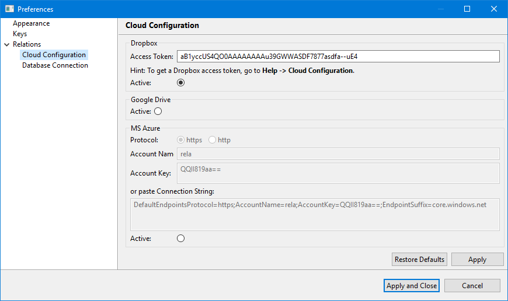
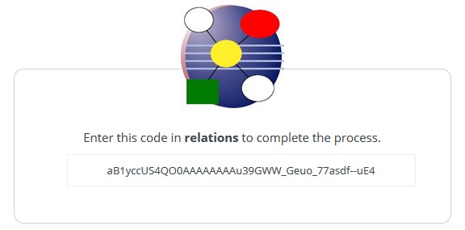
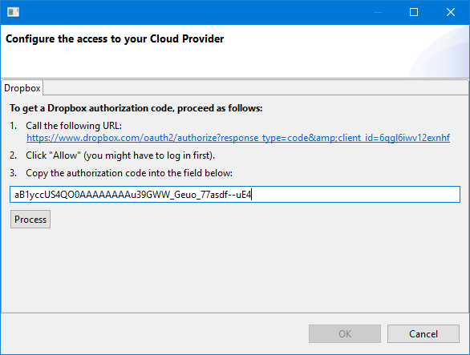

The Relations application is now available as mobile app on Android.
To read the Relations data on your mobile phone, you must first upload the data
created on your computer by the Relations application to the cloud.
In a second step, you can synchronize (i.e. download and install) your mobile app's data with data in the cloud.
For the initial transfer of the data, use the full synchronization option. After the initial upload, you can use the incremental data synchronization. This option only transfers the changes made since the last synchronization.
For that you can upload to the cloud, you must first configure the access to your cloud provider. (Utility -> Preferences... -> Cloud Configuration)

Dropbox needs an access token. You can get this access token from within the Relations application (see Help -> Cloud Configuration).
To start the workflow, you have to call the displayed authorization URL. This will lead you to a login page on Dropbox.
Once you are logged into Dropbox, you will be presented with a screen to authorize the Relations application to access your Dropbox data.
After you have approved, you will be redirected to a page displaying the application's access code.

Copy this access code into the provided field and click the Process button. This will generated the Dropbox access token and safe it to the preferences.

To configure the access to MS Azure, log in to the your Azure account and navigate to your storage account.
In the Settings section of the storage account overview, select Access keys.
Your account access keys appear, as well as the complete connection string for each key.
You can enter the protocol, account name and account key individually or you can copy and paste the connection string value
as a whole into the field provided.
To export your Relations data to Google Drive, no access configuration is needed.